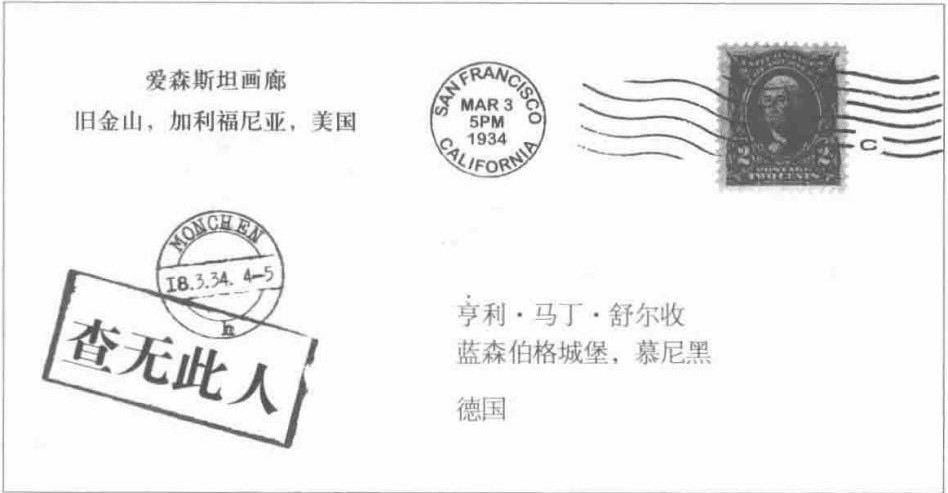

搜索这本书要搜作者或者英文名，译名被起点污染了。
字体是 TNO mod 中文组指定字体，非常契合本期主题。
而且我真的觉得 TNO 的文本很棒！
只要不是引用的文本都不是原文的文本
凯瑟琳·克莱斯曼·泰勒
欢迎回到...
...美丽新世界
我认为，从各方面来说，希特勒对德国有利，但我尚不确定。......但我自问，他足够明智吗？他的褐衫军就是一群乌合之众。他们抢劫，并开始了糟糕的排犹措施。
......我们找到了一位领袖！但我也会谨慎地自问，他会带我们去往何方？为了结束绝望，我们常常会被带往疯狂的方向。
我简直无法相信这种古老的殉难会发生在今天的文明国家。给我写信吧，我的朋友，让我放宽心。
但我渐渐看出这些痛苦的必要性......我会永远把你看做我的朋友，但并不因为你是犹太人。
......你会为你的人民哀号，这我理解，这是闪米特人的特性。
我把这归咎于可怕的通信审查。 ......只要你回复一个简单的‘是’就可以.
...那么裂痕是不可避免的了。......我要给你的是一个‘不’字。
你该从你那落后的感伤主义中清醒清醒了......你永远不会了解希特勒. 他是一把出鞘的利剑，一道白光，又如新一天的阳光一样炽热。我必须要告诉你，不要再写信来，我们分道扬镳了。
美丽...
过于乐观以及刚刚成功的演艺事业让她冒失地去了柏林。正如任何一个男人所见，她是为奢华而生的，是为奉献而生的......她深色的眼睛里藏着温柔而勇敢的灵魂，也有钢铁一般坚强而非常大胆的东西。她是一个不会轻易行事，也不会轻易付出的女人。
希特勒万岁！很抱歉，我要告诉你一个坏消息，你的妹妹已经死了。真遗憾......可怜的小格丽赛尔。我为你感到悲伤，但是正如你所见，我帮不了她。
省略的是一些“平淡如水、悲天悯人、冷漠残酷”的描写。
...新世界

这才是。